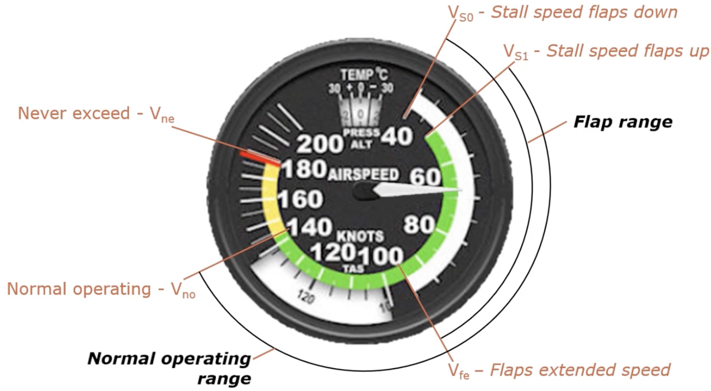
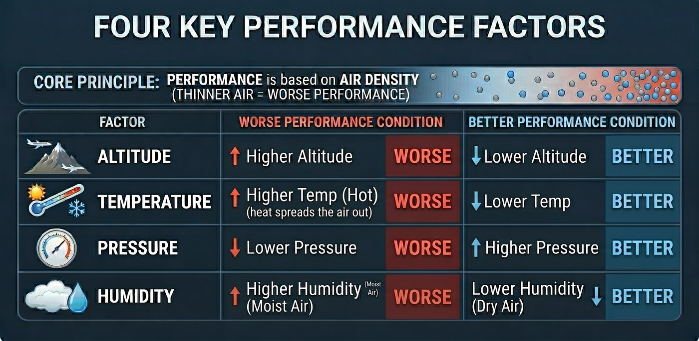
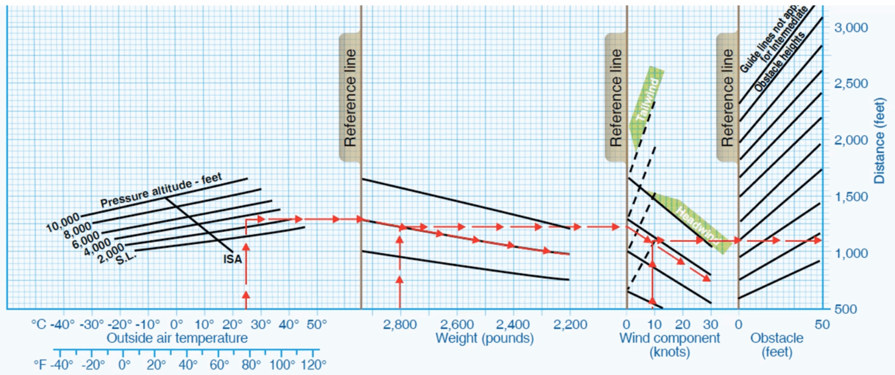
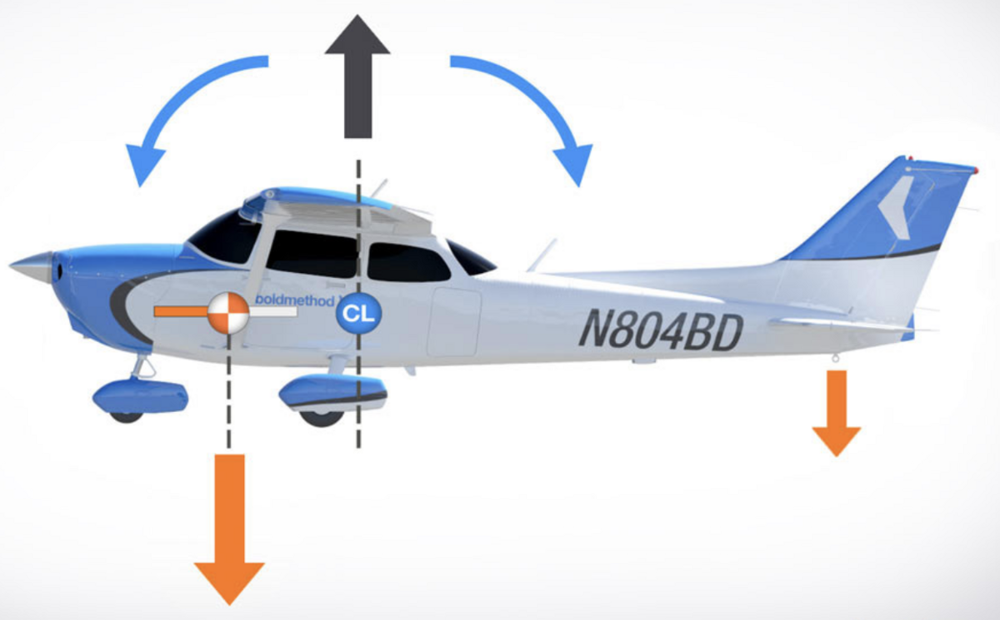

Airplane Performance & Weight/Balance
What thins out the air and hurts performance, the density-altitude math, and keeping the airplane in balance.
V-speeds
Maneuvering speed (VA) increases as weight increases — heavier → higher VA, lighter → lower VA. (A heavier airplane absorbs gusts before reaching a damaging load factor.)
| Speed | Meaning | ASI marking |
|---|---|---|
| VA | Maneuvering (varies with weight) | Not marked |
| VX | Best angle of climb | Not marked |
| VY | Best rate of climb | Not marked |
ASI color arcs: white = flap operating range, green = normal operating range, yellow = caution (smooth air only), red line = never exceed.


High pressure = cool, sinking air (better performance). Low pressure = warm, rising air. Performance is worse on low-pressure and high-humidity days.
Pressure & density altitude
Pressure altitude = height above the standard datum plane (29.92 "Hg). Or simply set the altimeter to 29.92 and read it.
Density altitude = pressure altitude corrected for non-standard temperature — the altitude the airplane actually "feels."
How density altitude moves
- Longer takeoff roll and a slower, shallower climb angle.
- You lift off at the same indicated airspeed but a higher true airspeed, while the engine and prop make less thrust in thin air.
- ~15 °F above standard ≈ +1,000 ft density altitude (≈ 120 ft per °C).
- True airspeed increases when it's hot — thinner air means a lower indicated airspeed, so you fly faster (higher TAS) for the same IAS. (Same reason the ASI reads slow up high — see Systems.)

- Start at the outside air temperature on the bottom scale.
- Go up to your pressure-altitude line.
- Go right to the first reference line, then follow the guide lines to your weight.
- Continue to the next reference line, then parallel the guide lines for the wind component (headwind shortens, tailwind lengthens).
- To the last reference line, then up the guide lines for the obstacle height.
- Read the required distance off the right-hand scale.
Weight & balance
The center of gravity (CG) should be ahead of the center of pressure (CP) and ahead of the main wheels. A forward CG is more stable; an aft CG is less stable (and can make recovery from stalls/spins difficult).

1 gal = 6 lbs.